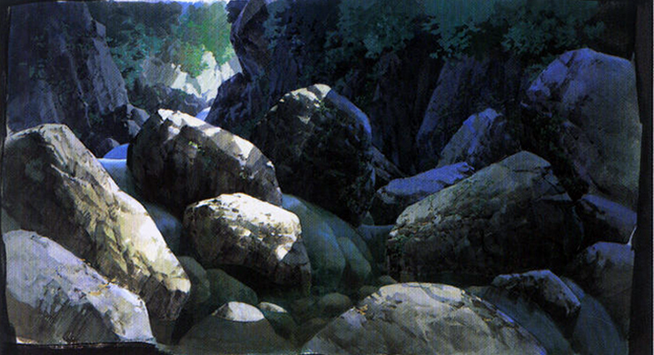
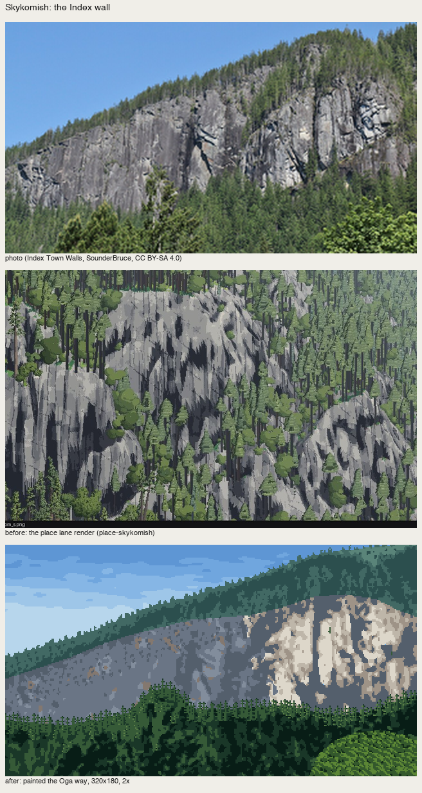
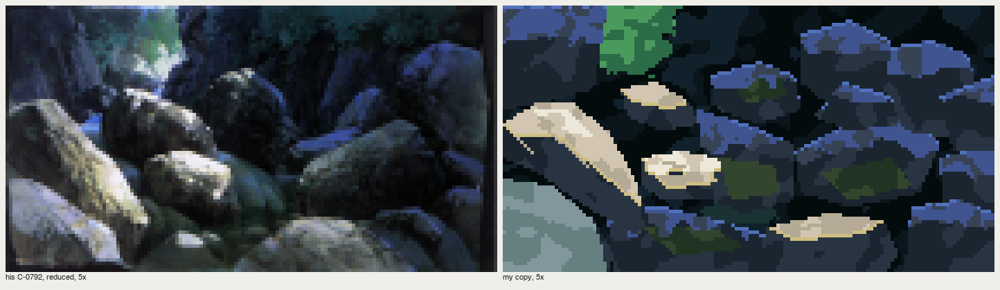
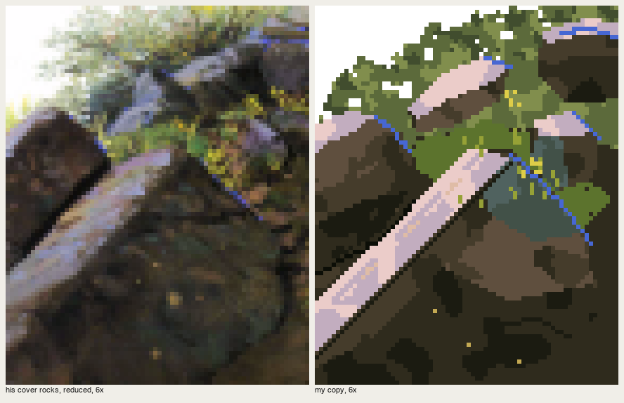

One light, concentrated; shadow full of colour
Front page: the tutorial. Code: copies/p5_gorge.py, copies/p3_rocks.py, places/skykomish.py, src/boulders.py in the study folder.
Of everything in the book, this is the principle that did the most for my pictures. Every place study that took its light from a photo came out flat, and every one where I designed the light became a picture.
Light cuts into the ravine, and shadow is about 2/3 of the picture, so the light dazzles on the rocks. Light falls only on certain planes… Don't spread the light around; concentrate it in one part. (p.56, C-0792)

C-0792 (levels-corrected). Sun on a handful of top planes; everything else in blue shadow, with reflected sky light and moss.
1. Light comes from where the world lets it through
The first painter I wrote concentrated the light with a screen-space pool, a bright blob where the point should be. It reads as a spotlight on a stage, because that's what it is:

nb174. Lambert | "Oga passes v0" with a light pool (bottom left). Wrong.
Oga's light is always a world event: a gap in the canyon rim, a break in the clouds, the sky from above on an overcast day, a low sun behind the trees. In my raycast gorge (src/boulders.py) the sun reaches the floor only through a band between the rims, projected along the sun, and boulders still cast shadows inside it:
proj = P - sun[None] * (P[:, 1:2] / sun[1]) # where the sun ray through P hits y=0
inwin = (proj[:, 0] > window[0]) & (proj[:, 0] < window[1])
...
lightv = inwin & ~occl

nb184. Lambert on every stone ("before", top right) is a pile of cookies. Light through the gap (bottom left) puts about two-thirds in shadow, and the picture gets a subject.
In the place studies the world event is designed by hand, as a mask:
- Skykomish: a cloud shadow over the left 60% of the wall, its edge following the fall line:
cloud = (xx - 0.25 * yy + 6 * noise(3.0)) < 176. - Olympic coast: overcast, so the light is simply "from above": every form lit on its top plane.
- San Juan: backlight, so everything that faces us is shadow and the light lives only at edges.

nb236. Skykomish before the light was designed: the wall's planes from the photo, lit everywhere. The critic: "nothing says where the sun is, and light and shadow cover about the same area."

fig. After: a cloud shadow on the left 60%, sunlit granite only on the right buttresses.
2. Shadow is the majority, and it's simple
Measure your light share: in P5, 14% of the pixels are in the light families; on the Skykomish wall I designed the cloud to cover the left 60%. Inside the shadow, keep three steps and no detail. On the wall I collapsed four photo-derived levels into three cool steps and ran the orphan clean-up three times:
sh_names = np.array([IX['q3'], IX['q2'], IX['q2'], IX['q1']]) # 4 organised levels -> 3 steps in shadow
cv.a[wall & cloud] = sh_names[lev][wall & cloud]
cv.a = majority(cv.a, 3)
Detail goes in the light only. In P5 the crack lines are drawn on the lit planes and nowhere else.
3. Shadow is full of colour: reflected light as a plane
Reflected light in the shadow is important. By day it takes the sky's colour, so it's cool; alone that's too cold, so add the object's own colour. (p.56)
Faces turned up in shadow see the sky and take its colour; faces turned down stay darkest; the object's own colour (moss, rock brown) is loosened in.
The trap: I first drew the reflected light as a 1–2 px sky-blue rim on top of every shadowed boulder. It reads as a cartoon outline:

nb259. Reflected light as outlines.
In his plate it's a plane: the upper third of each up-facing shadowed stone, broken by the rock's colour:
ys = np.nonzero(m.any(1))[0]
upper = m & (yy < ys.min() + 0.35 * (ys.max() - ys.min()) + 1.2 * cv.noise(1.5))
cv.a[upper] = I['rf1'] # violet-blue: the sky's colour
cv.mottle(upper, I['sh3'], 0.3, 1.4) # broken by the rock's own colour
top = m & ~np.roll(m, 1, 0)
cv.a[top & (cv.noise(1.0) > -0.3)] = I['rf2'] # the very top edge one step lighter

fig. His gorge | mine. The violet-blue fills the shadow the way his does.
In the place studies the same rule appears as a green-grey strip on the rock face turned up to the sky (P3), and as warm-grey patches loosening the cool shadowed granite at Skykomish:
cv.mottle(wall & cloud & (cv.a == IX['q1']), IX['qw'], 0.3, 2.0) # qw = c(0.58, 0.02, 60)
4. The light's colour at its edge (際)
A white sun alone doesn't look like light: add the light's colour where the light meets the object's edge. (p.56, C-0772)
A 1-px band, at three kinds of edge:
- Where a lit plane meets its own shadow (P5). Lit-plane pixels bordering the shadow face take a warm light colour,
edge=c(0.80, 0.08, 95):
python
litp = m & np.isin(cv.a, [I['li1'], I['li2'], I['li3']])
shp = m & ~litp
border = litp & (np.roll(shp, -1, 0) | np.roll(shp, 1, 1) | np.roll(shp, -1, 1))
cv.a[border] = I['edge']
- On the far edge of a lit top plane (P3, the cover). A hard 1-px run of pure cobalt, the sky's colour, where the lit top turns away. I found his rims by hue in his plate (C > 0.05, h 245–290), and they sit exactly where the top plane ends.

- Where a silhouette meets the glow (San Juan). Crown pixels next to sky on the sun's side take orange (
rim1,rim2), strongest near the sun. See how-to 9.
Checklist
- Where does the light come from, as a world event? Draw it as a mask.
- What share is in shadow? Aim for 60–85%.
- In shadow: three steps; up-facing planes take the sky; down-facing are darkest; the object's colour in patches.
- In light: the detail.
- At the edges of the light: one pixel of the light's colour.